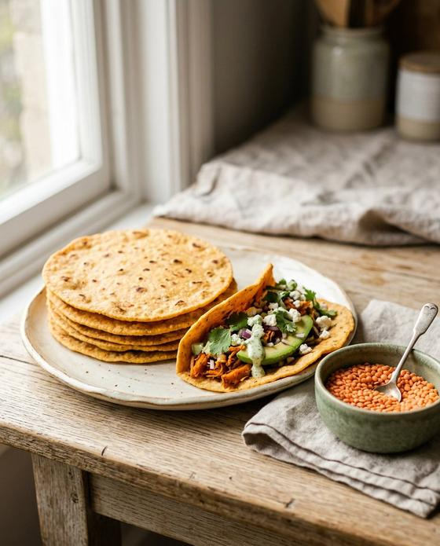

Pagamento confirmado
Obrigado! Seu livro está aqui.
Toque no botão abaixo para baixar o 50 Receitas Naturais que Funcionam de Verdade. O arquivo é seu para sempre — salve no celular ou no computador.
- Salve esta página nos favoritosVocê também recebe este link no seu e-mail para baixar de novo quando quiser.
- No iPhoneAbra o PDF, toque em compartilhar e escolha “Salvar em Arquivos” ou “Livros”.
- No AndroidO arquivo vai para a pasta Downloads. Abra com o leitor de PDF ou o Google Drive.
- Precisa de ajuda?Responda o e-mail de confirmação da compra que a gente te ajuda.
Por onde começar
Comece pelo capítulo que fala com você
Escolha uma receita e faça por 2 a 4 semanas antes de decidir se ajudou.

01
Açúcar no Sangue
Receitas e bebidas para suavizar os picos de glicose
7 receitas
02
Vontade de Doce
Sobremesas sem açúcar refinado que dão certo
10 receitas
03
Pães sem Farinha de Trigo
Pães, wraps e massas feitos com outros ingredientes
8 receitas
04
Intestino e Barriga Inchada
Para o intestino preso e para a sua microbiota
5 receitas
05
Sono, Estresse e Cortisol
Rituais e lanches para desacelerar no fim do dia
6 receitas06
Inflamação e Articulações
Gengibre, cúrcuma e ômega-3 no prato e no copo
4 receitas
07
Retenção de Líquido e Pressão
Menos sódio, mais potássio e chás da tradição
4 receitas
08
Músculos e Ossos
Proteína e cálcio para envelhecer forte
6 receitas